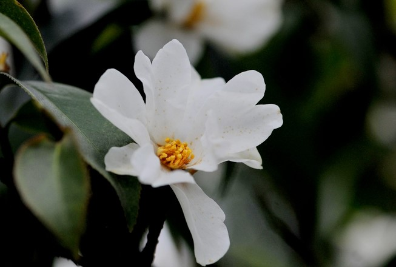
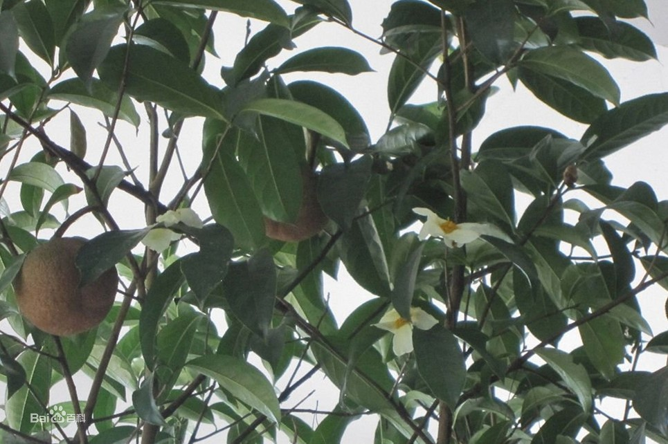
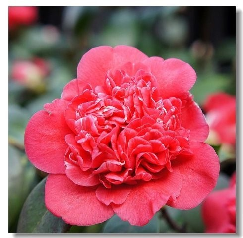
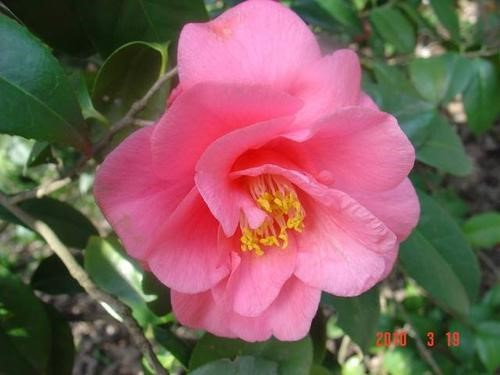

山茶园
位于樱花湖畔，建于1992年，面积约45亩，现有半齿红山茶、长瓣短柱茶、糙果茶等山茶物种及十八学士、金盘荔枝、星桃牡丹、紫魁等30多个茶花品种，约700株。茶花为我国十大名花之一，它鲜艳、高雅、清丽、吉祥，叶片翠绿、花朵硕大，自晚秋至初夏，不同品种次第绽开，以春花为主，但亦有品种在冰雪时开放，十分美丽动人。

长瓣短柱茶
山茶科，山茶属灌木或小乔木，嫩枝较纤细，有短柔毛。叶片革质，长圆形，先端渐尖或尾状渐尖，基部阔楔形或略圆，上面干后橄榄绿色，有光泽，无毛，或中脉基部有短毛，下面同色，中脉有稀疏长毛，花顶生，白色，花梗极短；苞被片半圆形至近圆形，革质，无毛，花开后脱落；花瓣倒卵形，先端凹入，花药基部着生；子房有黄色长粗毛；蒴果球形，花期1-3月。

糙果茶
山茶科、山茶属植物。产广东、广西、湖南、福建、江西。越南北部有分布。模式标本采自广东罗浮山。

金盘荔枝
大瓣一轮成盆状，花径9-10公分，中心是多数细瓣紧密排列组成的球体，状若荔枝，细瓣中伴生少雄蕊，但有时雄蕊较多。
